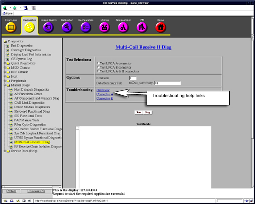
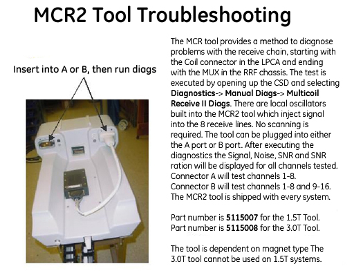
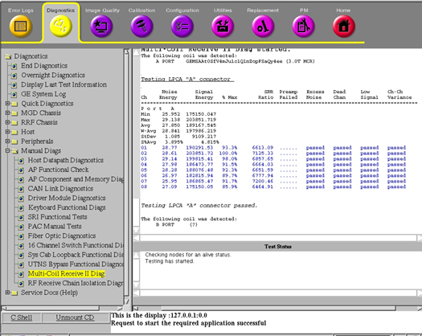
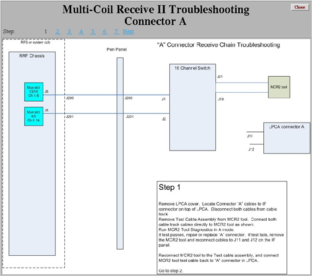
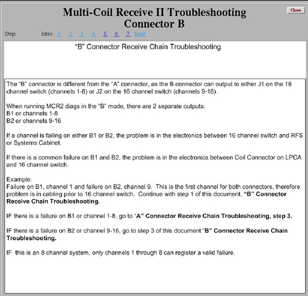
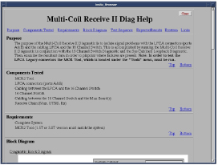

Proprietary to General Electric Company
Direction 5440000, Rev# 5
Signa HDxt Service Methods
Module Version 1.0, Version Date 5/15/07
Proprietary to General Electric Company |
| Required Persons | Preliminary Reqs | Procedure | Finalization |
|---|---|---|---|
| 1 | Not Applicable | 30 mins | Not Applicable |
The MCR 2 and MCR 3 tools are identical in functionality. The only difference is that the MCR 2 tool cannot be used with systems that have the HDx LPCA. Legacy systems that have been upgraded to 32-channels or have a forward production LPCA were provided with a new MCR tool that replaces the MCR 2 tool.
| Item | Qty | Effectivity | Part# | Manufacturer | |
|---|---|---|---|---|---|
| MCR 2 Tool | 1 | 1.5T | 5115007 | - | |
| - | - | 3.0T | 5115008 | - | |
| Coax to Coax receptacle (In the RF Kit) | 1 | - | 5117335 | - | |
| ||||
| Strong Magnetic Field! | ||||
| Ferrous materials can become dangerous projectiles in the presence of the magnetic field Produced by the Signa Magnet. | ||||
| Do not Bring any ferromagnetic tools or equipment into the magnet room. |
| Condition | Reference | Effectivity |
|---|---|---|
System software is loaded and the system is capable of making images. | - | - |
Start the Common Service Browser if it is not already running.
Click the [Diagnostics] tab and then click the [Multi-Coil Receive II Diag ] from manual diagnostics link. See Illustration 1.
Illustration 1: MCR2 Diagnostics Screen

Once on the MCR2 Diag page, Click the Troubleshooting [Overview] link in the center of the page for hardware hookup information. See Illustration 2.
Illustration 2: MCR 2 Tool Hardware Setup

Troubleshooting flowcharts for Connector A and Connector B can be obtained from the hyperlinks in “Troubleshooting” section as shown in Illustration 1 below.
Once tests are setup, Click the [Run] button. The test should indicate in the lower Test Status window that it is executing.
The test will complete in about 25 seconds. After the test runs successfully, we get the screen as shown in Illustration 3.
Illustration 3: Test Results

Failures are highlighted in red font while passing data is always highlighted in blue font.
Once testing is complete, perform a [TPS Reset] before continuing.
Important troubleshooting documentation is available from the blue, underlined hyperlinks on the diagnostics page.
Clicking on the [Connector A] hyperlink, brings up the information shown in Illustration 4. Other links can be obtained by clicking the respective page numbers or the Next hyperlink.
Illustration 4: Troubleshooting Flow

Clicking on the [Connector B] hyperlink, brings up the information shown in Illustration 5. Other links can be obtained by clicking the respective page numbers or the Next hyperlink.
Illustration 5: Connector B Troubleshooting Screen

Additional help is also available if we click on the Multicoil Receiver II link and it is as below in illustration 6:
Illustration 6: Help Screen

No finalization steps.